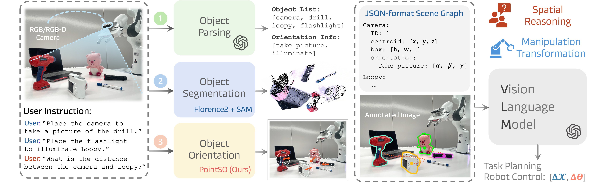
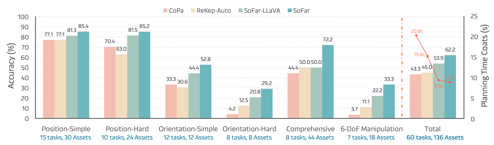

1. Complex robotic manipulation tasks are constrained by the understanding of orientation, such as "upright a tilted wine glass", or "plugging a cord into a power strip."
2. We introduce the concept of semantic orientation, representing the object orientation condition on open vocabulary language. Such as the orientation of "top," "handle," and "pouring water."
3. We construct OrienText300K, a large paired dataset of point clouds, text, and orientation. We trained PointOFM, the first Orientation Foundation Model.
4. Based on SAM and PointOFM, we propose SoFar, the first 6-DoF spatial intelligence LLM, which achieves a 13.1% performance improvement on the 6-DoF object rearrangement task and a 38.2% improvement over OpenVLA on the SimplerEnv benchmark.

